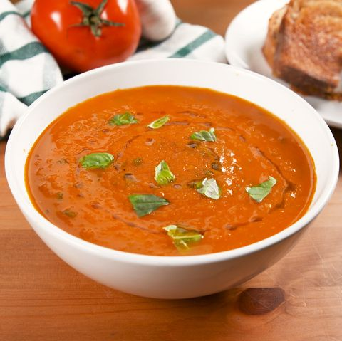

TOMATO BASIL SOUP

This is a recipe for the probably the most delicious tomato basil soup you will ever eat (but not really because it isn't real.)
INGREDIENTS
- Roma Tomatoes
- A Ridiculous Amount of Basil
- Tomato Juice
- Onion
- Heavy Cream
- Butter
- Garlic Powder
- Salt and Pepper
STEPS YOU GOTTA TAKE
- FIRST YOU GOTTA SIMMER THOSE TOMATOES IN THE TOMATO JUICE
- WHILE THOSE ARE COOKIN' YOU SHOULD CHOP UP HALF THE BASIL
- ONCE THE TOMATOES START PEELING, RUN THEM THROUGH THE FOOD PROCESSOR
- NOW IT IS TIME TO POUR IN THE HEAVY CREAM AND BUTTER
- MIX IT ALL TOGETHER AND PUT THE BASIL IN UNTIL YOU'RE SATISFIED